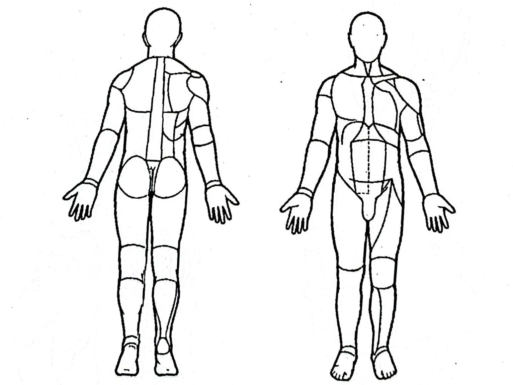

| 資料來源 |
其他：
|
||||||||||||||
| 事故原因 |
車禍:
|
|
|
|
|||||||||||
|
|
|
|
|
||||||||||||
|
切割傷: |
咬傷：
|
|
|||||||||||||
| 外傷機轉 |
|
||||||||||||||
| 傷口長度種類 | A/W | Abrasion wound | Fr | Fracture | 值班醫師 | |
| Ecc | Ecchymosis | P | Pain | |||
| L/W | Laceration wound | T | Tenderness | |||
| O | Puncture/Stab | Avn | Avulsion | |||
| Treatment |
|
西元 年 月 日 | ||||
| 外傷嚴重度Injury Severity Score,ISS 評分表 | |||||||
| 部位 | 頭頸 | 顏面 | 胸部 | 腹部 | 肢體 | 外觀軟組織 | ISS分數 |
| AIS分數 | -- | ||||||
| 傷 口 部 位 圖 示 |

|